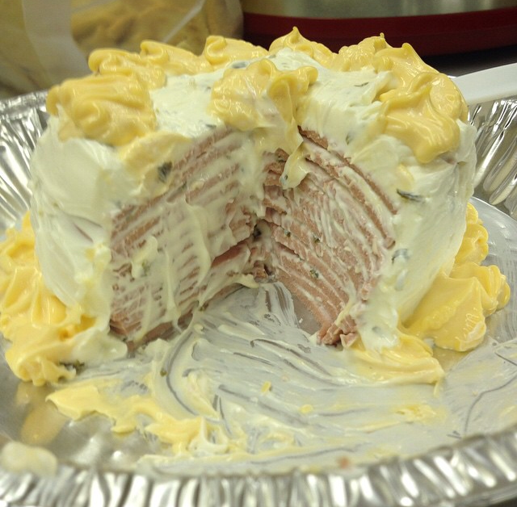

Bologna Cake

Description
A vile amalgamation of every day foods that will make even the most iron-clad stomach churn
Ingredients
- 12 Slices of your favorite bologna
- 24 ounces Mayonnaise
- 12 ounces Mustard (Not whole grain, preferably)
- 2 Kosher Dill Pickles (diced)
Steps to Success
- Combine 18 ounces of Mayonnaise with Dill pickles
- Combine reserved Mayonnaise with all 12 ounces of mustard
- Lay 1 slice of bologna in a pie tin
- coat with a thin layer of Mayonnaise frosting
- repeat layering until all bologna is utilized
- Bake at 500 degrees Farenheit for 9 hours
- Use the rest of the mayonnaise frosting to coat the sides and top of the cake
- Using a piping bag and the decorative nozzle of your choice, decorate the top and sides of your cake with the mustard frosting. Be creative! my Aunt Beth used to make little flowers and animal shapes. The kids love it!